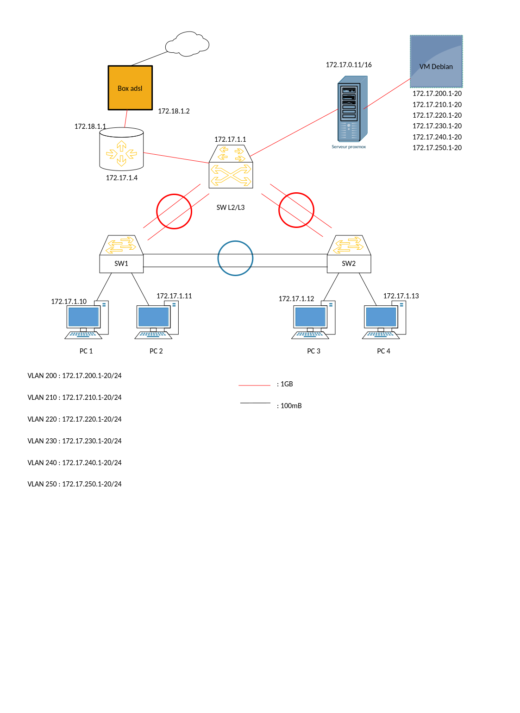

01
Méthodologie utilisée
Conception du plan d'adressage IPv4
Avant de toucher un câble, j'ai conçu le plan d'adressage complet sur papier : identification des VLANs nécessaires (données, management, serveurs), calcul des sous-réseaux avec VLSM, attribution des plages et des passerelles. Ce tableau a servi de référence à toute l'équipe pendant le projet.
Câblage et configuration des commutateurs (2960)
Configuration des ports en mode access ou trunk selon le schéma, création des VLANs dans la base de données, activation du RSTP avec les bonnes priorités pour maîtriser le Root Bridge, et mise en place de la sécurité des ports (
port-security, BPDU Guard).Routage inter-VLAN sur le Catalyst 3560
Création des interfaces VLAN virtuelles (SVI) sur le 3560 avec les adresses de passerelle, activation du routage IP (
ip routing), et configuration de l'EtherChannel entre les deux 2960 en mode LACP pour l'agrégation de liens.Installation et configuration du serveur Debian
Déploiement d'une VM Debian sous Proxmox (deux disques, deux interfaces réseau). Configuration d'Apache2 avec un vhost, vsftpd en mode passif, BIND9 comme résolveur DNS cache et tftpd-hpa. Accès SSH configuré par clé publique/privée.
Tests et validation
Vérification méthodique avec les commandes
show IOS (show vlan brief, show interfaces trunk, show etherchannel summary, show ip route). Ping inter-VLAN pour valider le routage, capture Wireshark pour analyser le trafic.
02
Problèmes rencontrés & solutions apportées
Problèmes
Pas de routage inter-VLAN
Les VLANs ne communiquaient pas entre eux malgré la configuration du 3560. Les pings entre machines sur des VLANs différents échouaient systématiquement.
EtherChannel non fonctionnel
L'agrégation de liens entre les deux 2960 ne montait pas. Le port-channel restait en état "down" même après configuration des deux côtés.
DNS cache ne résolvait pas
BIND9 était installé et démarré mais les clients du réseau ne pouvaient pas résoudre les noms de domaine via le serveur.
Solutions
Oubli de
ip routing sur le 3560
Le commutateur L2/L3 n'avait pas le routage IP activé. Une simple commande ip routing en mode global a résolu le problème. J'ai aussi vérifié que les interfaces SVI étaient bien en état "up/up".
Modes LACP non concordants
Un côté était configuré en
mode active et l'autre en mode on — incompatibles. En mettant les deux en mode active, le port-channel est monté immédiatement.
Directive
allow-query manquante
BIND9 par défaut n'accepte que les requêtes locales. J'ai ajouté allow-query { any; }; dans named.conf.options pour autoriser tout le réseau.
03
Ce que j'ai appris & bilan
Vision d'ensemble d'une infrastructure réseauComprendre comment les couches s'articulent : câblage physique, commutation L2, routage L3, services applicatifs — et diagnostiquer les problèmes couche par couche.
Administration Cisco IOSMaîtrise des commandes de configuration et de diagnostic (show, debug) pour les switches Catalyst et les routeurs Cisco dans un contexte d'entreprise.
Déploiement de services LinuxInstallation et configuration d'Apache2, vsftpd, BIND9 et tftpd-hpa sur Debian — services fondamentaux d'une infrastructure réseau d'entreprise.
04
Preuves & livrables

Architecture réseau · Visio
Schéma logique — VLANs, adressage & topologie
Schéma Visio de la topologie réseau complète : 4 PC, 2 switches L2 (SW1 & SW2), 1 switch L2/L3, routeur, serveur Proxmox et VM Debian avec plan d'adressage IPv4 172.17.x.x.
Rapport de projet
Livrables SAÉ 1.02 — Configurations & documentation
Document complet des livrables : configurations Cisco IOS exportées (switches 2960, 3560, routeur 2911), plan d'adressage et documentation technique du projet réseau.